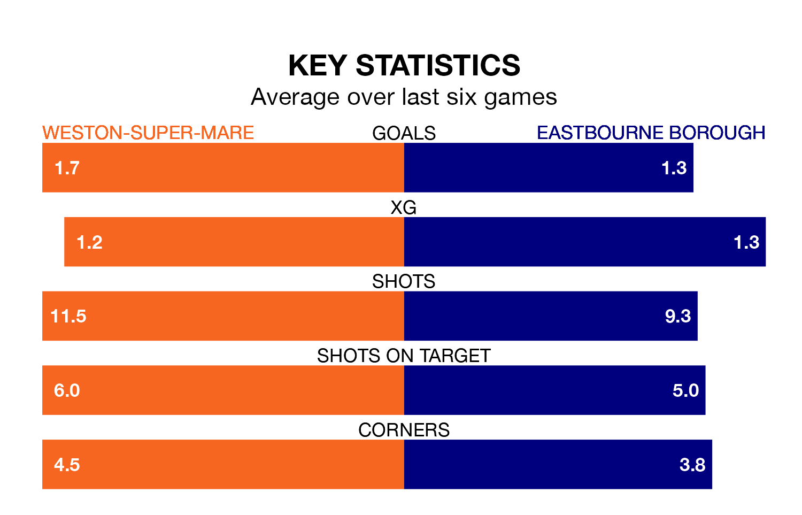

Weston-super-Mare host Eastbourne Borough on Tuesday at the Woodspring Stadium in the National League South.
In their last league match, on April 9, Weston-super-Mare beat Chippenham Town 2-1 at home.
Eastbourne drew, 0-0 away at Truro City on Wednesday.
In the last 10 years, Weston-super-Mare and Eastbourne have played each other on 11 occasions. They won four each, and they drew three times.
On average, Weston-super-Mare scored 2.0 goals and the Sports 1.7 in those matches.
Their last meeting was on September 2, when Eastbourne won 2-1 at home.
Eastbourne are 20th in the table after 43 games, of which they have won 12 and drawn nine, earning 45 points.
Weston-super-Mare are six places ahead of Borough in 14th, with 16 wins and seven draws putting them on 55 points.
With 46 goals in 43 games so far this season, the Sports are the league's third-lowest scorers with 1.1 goals per game. And they are conceding more than average, letting in 70 goals at a rate of 1.6 per game.
The home team, meanwhile, are above average scorers, with 1.5 goals per game, compared to a league average of 1.4. They have conceded 1.6 goals per game.
Weston-super-Mare are in mixed form in the National League South, with two wins and a draw from their last six games.
With three wins and two draws over that period, the visitors' form is better – they have taken 11 points from 18, compared to Weston-super-Mare's seven.
Updated: 10:01 (UTC), 12/04/24